2015
Wok & Roll
Established in a city well-known of its traditional culinary: Sukabumi, Wok & Roll appear carrying a more modern approach combining restaurant and karaoke. The name itself was intended to represent the concept. Though “Wok” is commonly used in Chinese cookery, the restaurant also serving Western and Indonesian cuisine.
We developed the visual taking inspirations from neon sign commonly seen in Rock & Roll’s scene. Adopted its certain shape and vibrant color, the visual was enriched with a touch of detailed illustration from old advertisements.
—
client: Wok & Roll
discipline: Identity, Printed Matter
scope of work: Art Direction, Design
food photography: Richard Lie, Vincent Wong, Ivanna Cerelia Suryo
work done in collaboration with Ivanna Cerelia Suryo
—
disclaimer: Photos for the menu was taken in different restaurant since we haven’t visited Sukabumi since then.
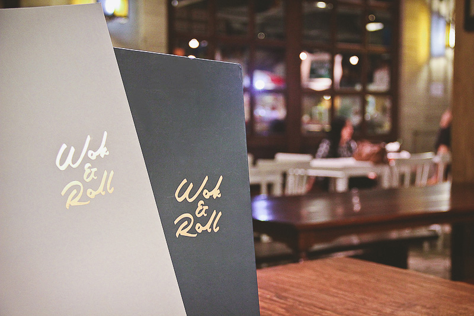
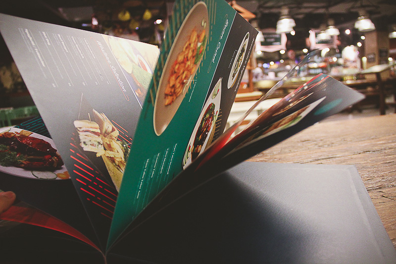
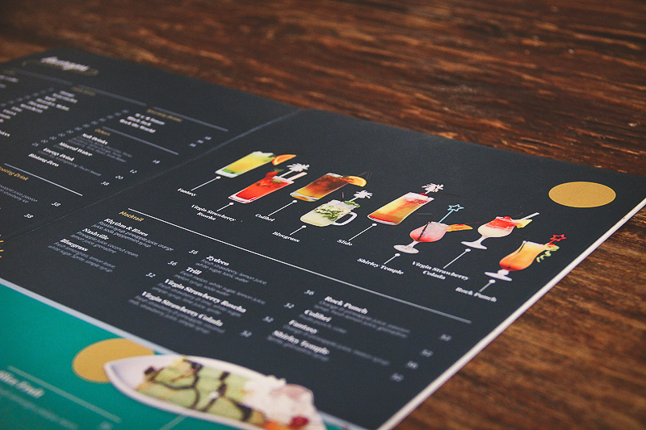
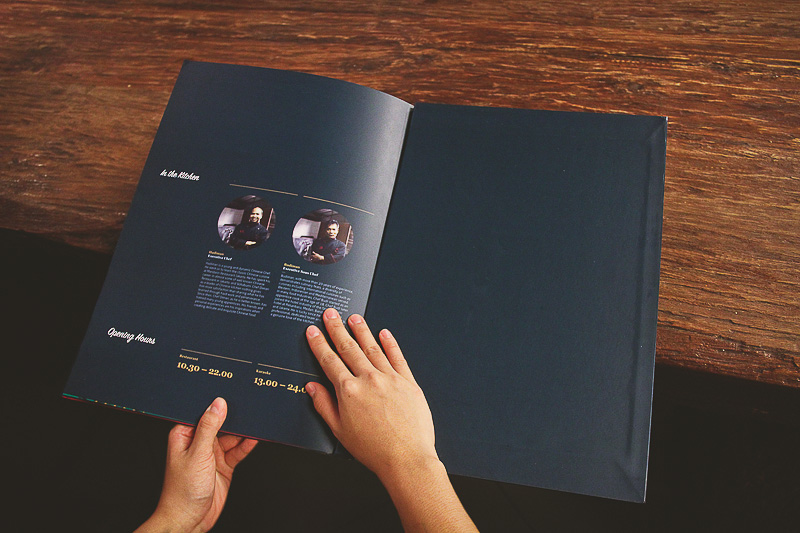
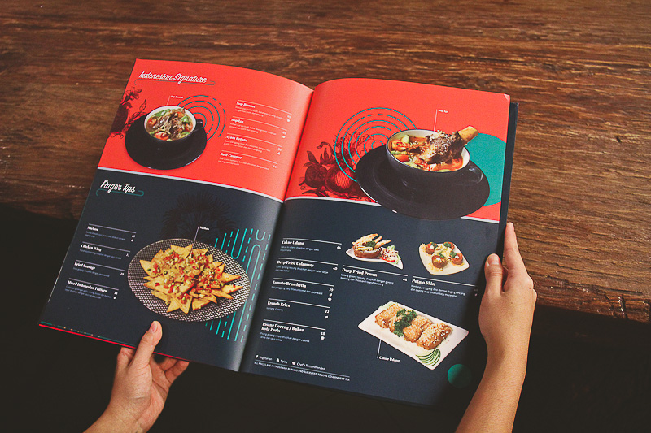
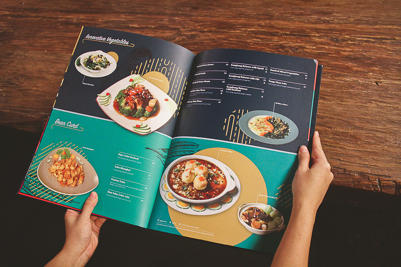
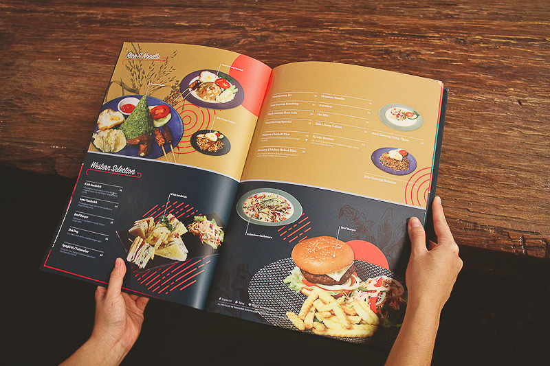
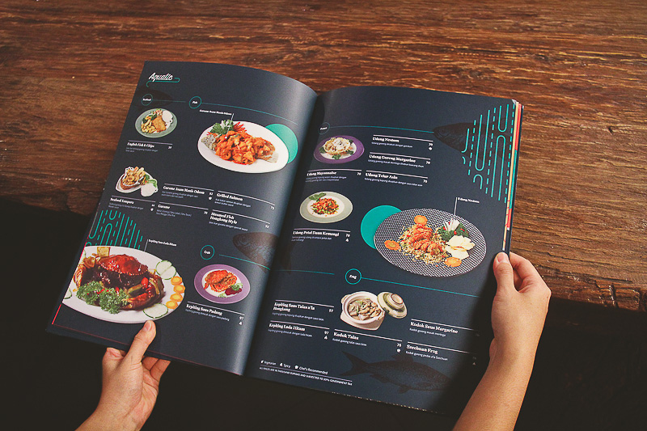
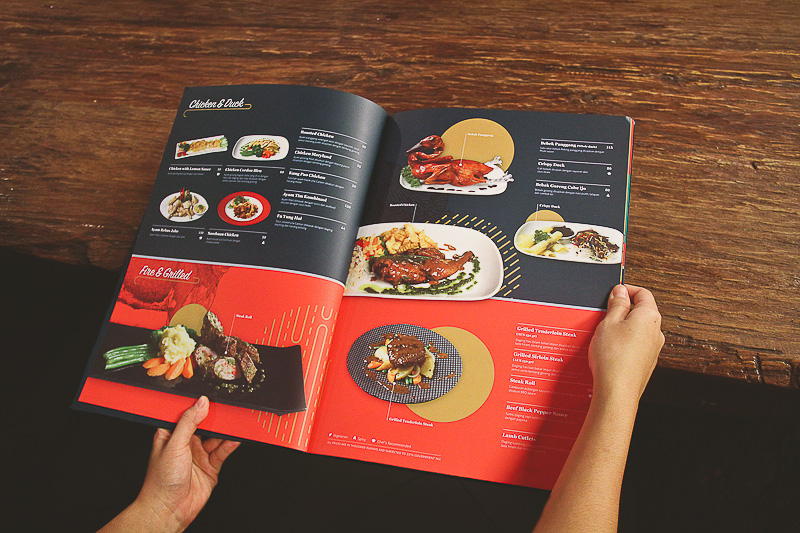
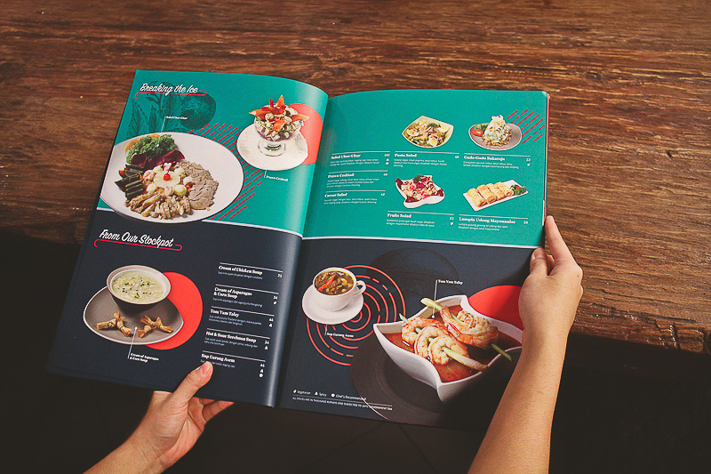
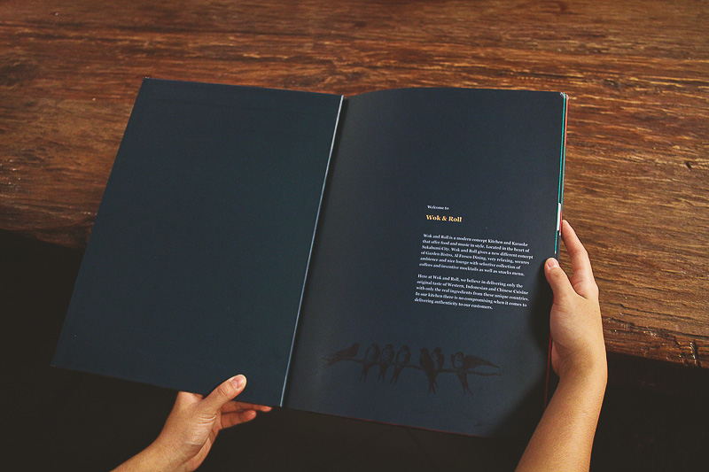
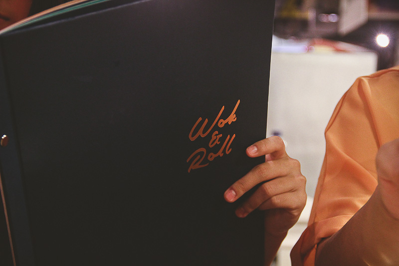
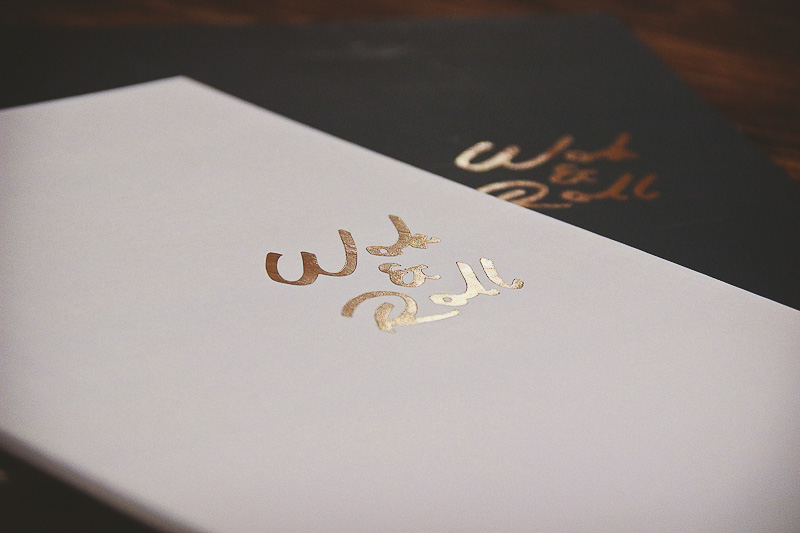
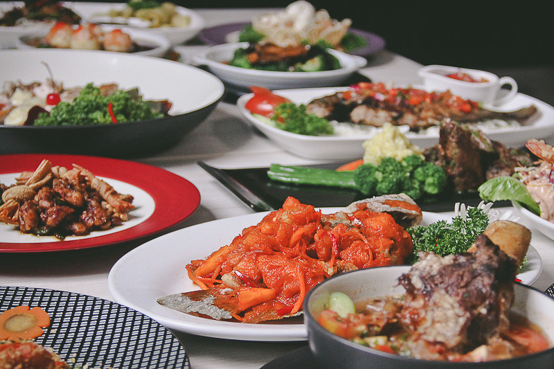
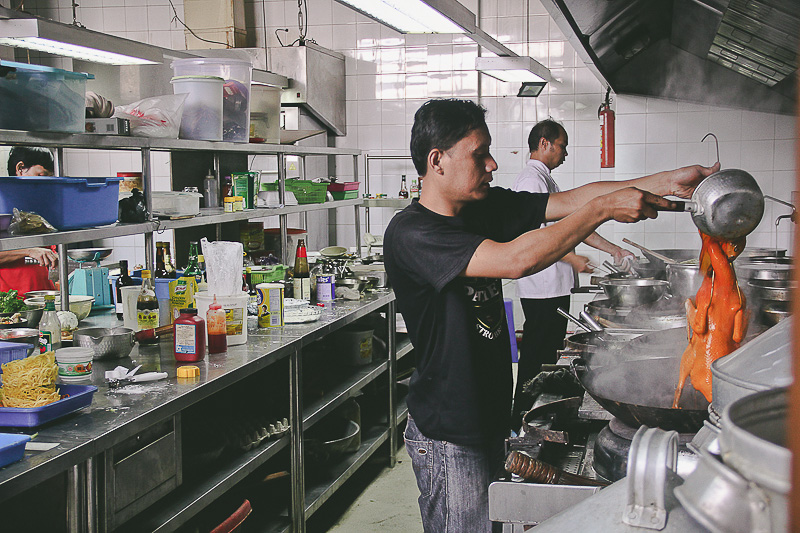
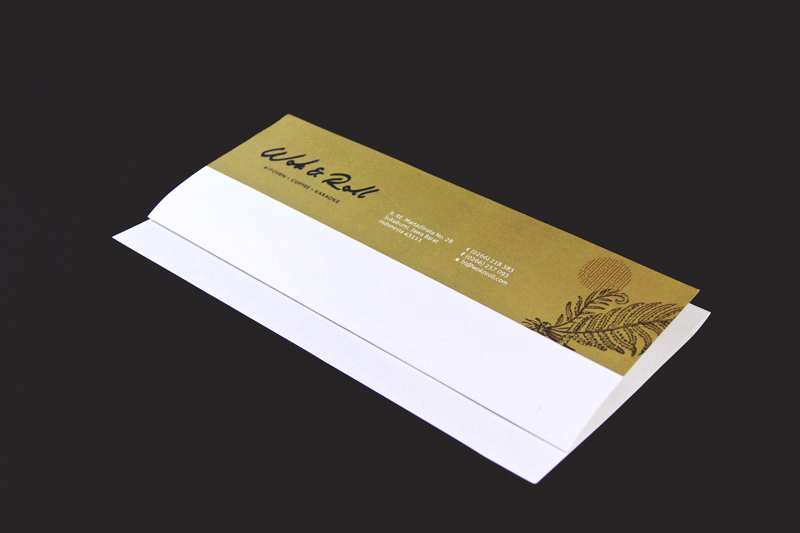
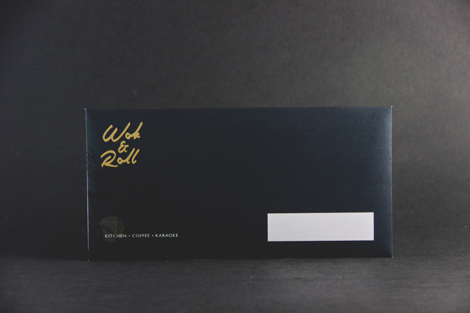
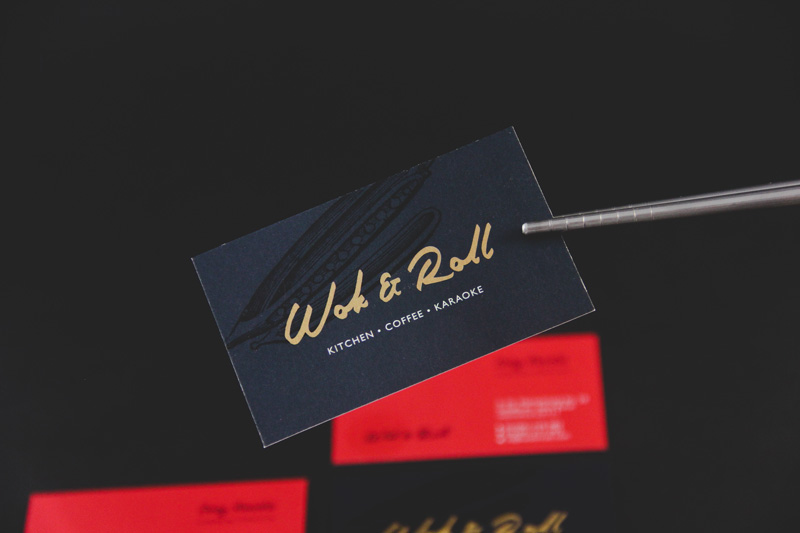
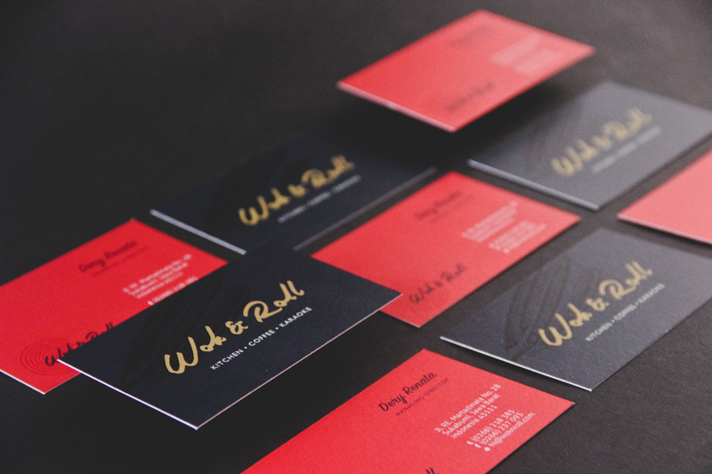
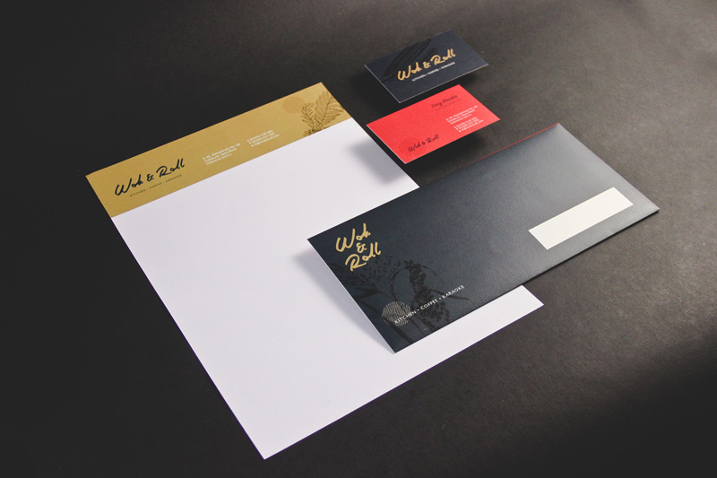
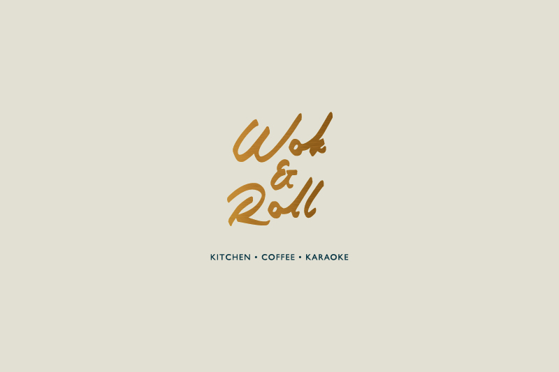
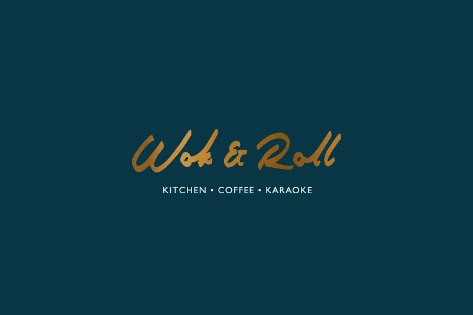